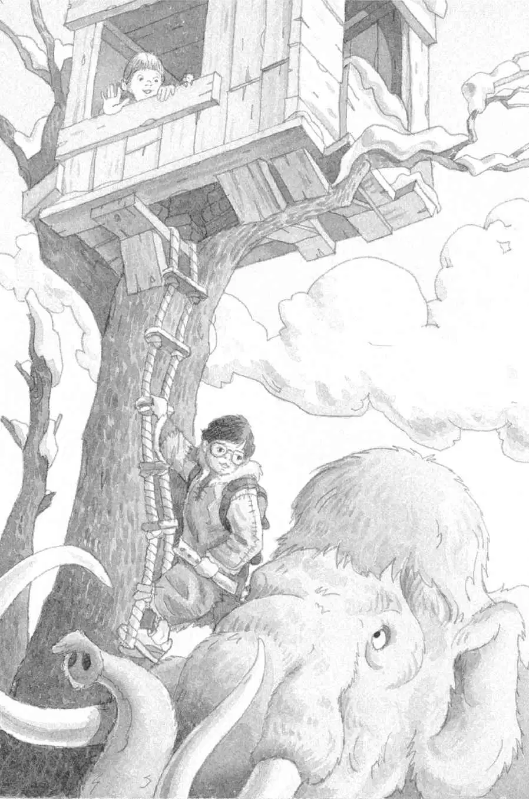

剑齿虎纵身向前一扑。
杰克惊恐地瞪大了眼睛。
“快吹笛子。”安妮小声提醒。
“她疯了吗？”杰克想道。
“试试看！”安妮说。
杰克把用猛犸象骨头做的笛子举到唇边，吹了起来。
笛子发出一种奇怪的声音。
剑齿虎愣住了。它狠狠地瞪着杰克。
杰克的手在发抖。
剑齿虎大声嗥叫。它又往前跨了一步。
猛犸象咆哮着，用脚跺着大地。
“吹笛子！”安妮说，“不要停！”
杰克又吹了起来。
剑齿虎又愣住了。
杰克吹啊吹啊，吹得气都喘不过来了。
剑齿虎发出一声声嗥叫。
“它还在呢，”安妮轻声说道，“继续吹啊。”
杰克闭上眼睛，深深吸了口气。然后，他用尽全力吹起来，手指在骨笛的孔上来来回回按着。
笛子的声音很奇怪——似乎来自另外一个世界。
“它离开了！”安妮压低声音说。
杰克睁开眼睛。剑齿虎正在灰溜溜地朝悬崖走去。
“我们成功了！”安妮说。
杰克放下笛子。他感到一阵说不出的疲倦。
猛犸象高兴地舞动着它的长鼻子。
“去树屋吧，露露。”安妮说。
猛犸象舒了口气，然后笨重地朝最高的那棵树走去。
杰克骑在猛犸象的背上，抓到那架绳梯。他把绳梯稳住，递给安妮。
安妮抚摸着猛犸象巨大的耳朵，说：“再见了，露露。谢谢你。”
她一把抓住绳梯，随即开始往上爬。小老鼠也爬了上去。
等安妮和小老鼠爬进树屋后，杰克才爬上绳梯。

他扭过头看着猛犸象。“再见了，好样的。”他说，“现在快回家吧，当心那只剑齿虎。”
猛犸象转过身，慢慢走进暮色。
当它消失在视线中时，杰克开始顺着绳梯往上爬。他双手一撑，钻进了树屋。
“给你！”安妮说着把那本宾夕法尼亚的书递给了杰克。
杰克笑了。现在他相信他们真的找到了第三样以字母M开头的东西。他们的任务完成了。
“在我们离开之前，必须把这些大衣还回去。”安妮提醒道。
“噢，对。”杰克说。
他们脱掉身上的驯鹿皮大衣，扔到树下。
“好冷啊！”安妮说，“但愿克鲁马努人能找到它们。”
杰克出神地望着窗外，他想最后再看一眼这个史前世界。
太阳落到山丘的后面去了。在白雪皑皑的原野上，有四个人在行走。是克鲁马努人一家。
“喂！”安妮喊道。
“嘘！”杰克说。
克鲁马努人停住脚步，朝安妮和杰克这边张望。
“我们把你们的驯鹿皮大衣留下了！就在这里！”安妮指着树底下。
最高的那个人上前一步，举起手里的一根长矛。
“该离开了。”杰克说。
他抓起宾夕法尼亚的书，找到那张蛙溪的图片，用手指着说：“请带我们回家。”
“再见啦！祝你们好运！”安妮一边喊，一边对着窗外挥手。
起风了。
树屋开始旋转，越转越快。
然后，一切都静止了。
完完全全地静止不动了。